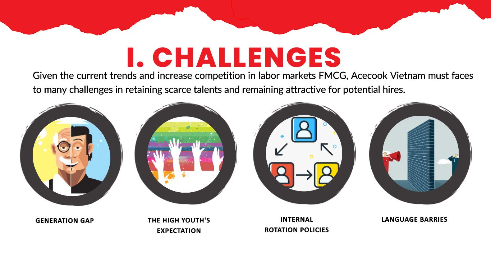
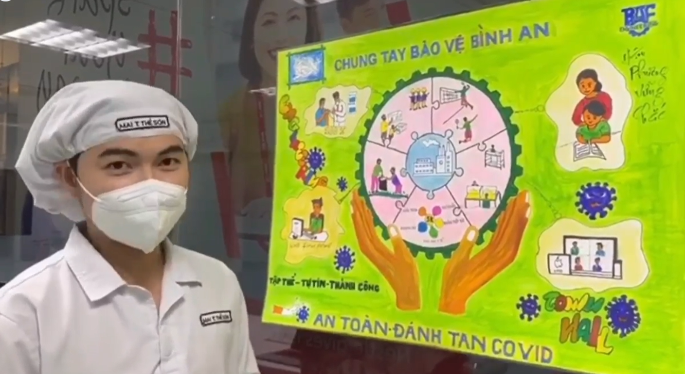
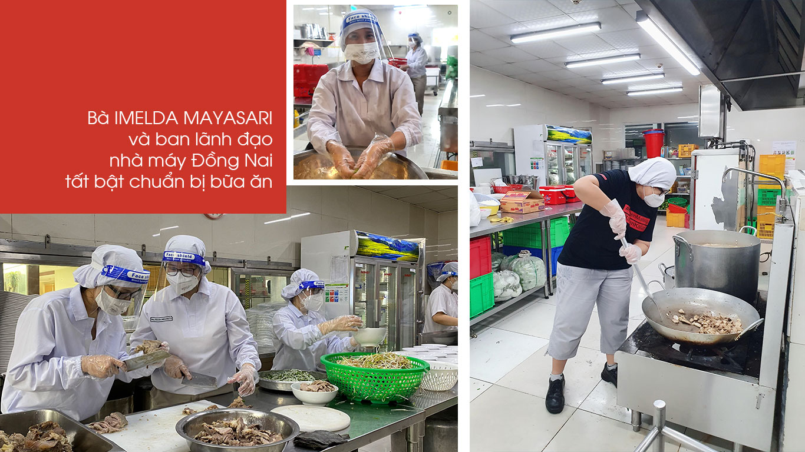
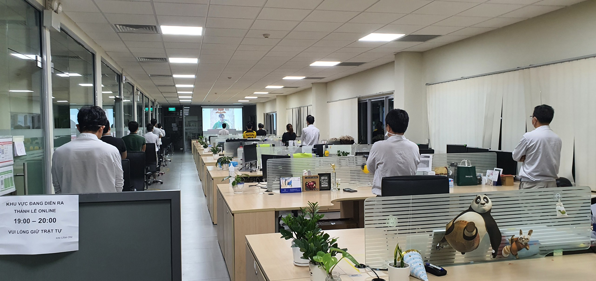
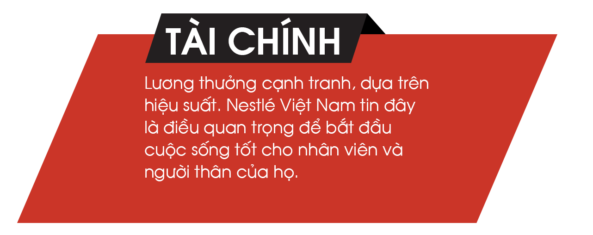
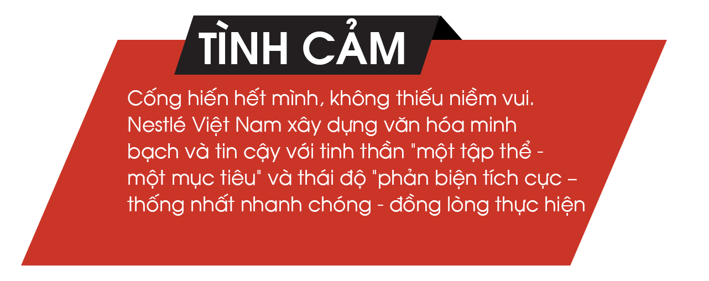
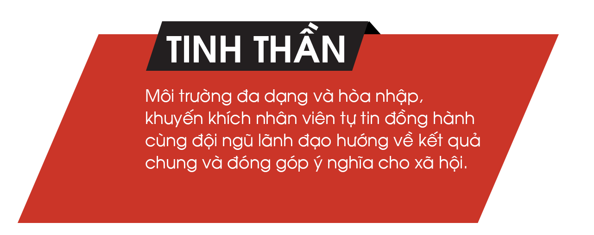
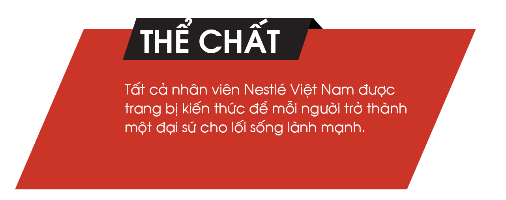

Acecook Việt Nam, một nhà sản xuất thực phẩm hàng đầu tại Việt Nam, đã tận dụng sự tham gia của nhân viên để vượt qua những thách thức, thúc đẩy tăng trưởng và đảm bảo thành công lâu dài.
Trước những biến động của thị trường lao động và sự cạnh tranh gay gắt trong ngành hàng tiêu dùng nhanh (FMCG), Acecook Việt Nam cần giải quyết các vấn đề cấp bách trong việc giữ chân nhân tài bên trong và gia tăng sức hấp dẫn đối với ứng tuyển tiềm năng.

Để giải quyết những vấn đề này, Acecook Việt Nam đã triển khai các chiến lược sáng tạo tập trung vào các giá trị cốt lõi của họ là "NHÂN VIÊN HÀI LÒNG - KHÁCH HÀNG HÀI LÒNG - XÃ HỘI HÀI LÒNG". Những nỗ lực này không chỉ nâng cao sự hiểu biết và hợp tác nội bộ mà còn mang lại nhiều giải thưởng và ảnh hưởng tích cực đến hiệu quả chung của công ty.
Sự an tâm của người lao động đến từ việc Nestlé áp dụng các quy tắc an toàn cao hơn so với quy định, chính sách hiện hành.
Acecook đã khởi xướng một số biện pháp để thu hẹp khoảng cách thế hệ và giải quyết mong đợi của nhân viên. Ban lãnh đạo đã chủ động thực hiện các bước để hiểu nguồn nhân lực đa thế hệ như tham gia các cuộc trò chuyện thường xuyên và đối thoại tại nơi làm việc.
Công ty khuyến khích giao tiếp cởi mở thông qua đường dây nóng và email riêng, cho phép nhân viên bày tỏ mối quan ngại và đề xuất của mình. Acecook đầu tư vào các chương trình đào tạo và nuôi dưỡng văn hóa học tập để cải thiện giao tiếp với thế hệ trẻ và thu hút nhân tài trẻ. Họ cung cấp các cơ hội học tập liên tục như:
• [VV2] Đào tạo cho Quản lý [VV4] "Gen Z hiểu Acecook": "Tham quan nhà máy Acecook" dành cho sinh viên
• [VV5] [VV6] Acecook hiểu mong đợi của Gen Z
"Đa thế hệ & Acecook, hiểu nhau hơn" - Kết nối bằng những sân chơi ý nghĩa [VV7] [VV8] Thư tình của Chủ tịch
Acecook đã chuyển đổi những thách thức thành cơ hội thông qua chính sách luân chuyển nội bộ nhằm mục đích thúc đẩy đổi mới và phát triển. Phòng Nhân sự của công ty đã tạo điều kiện thuận lợi cho quá trình tuyển dụng nội bộ để đảm bảo tất cả nhân viên đều biết về chính sách này.
Việc triển khai Hệ thống Năng lực (AiHr) đã đánh giá năng lực của nhân viên và xây dựng lộ trình đào tạo phù hợp cho từng vị trí, giảm bớt lo lắng về việc thích ứng với các vai trò mới. Cách tiếp cận này khuyến khích tự học và tối đa hóa khả năng thích ứng cá nhân với những thách thức mới.
[VV11] Chương trình Thực tập ACJ cung cấp cho nhân viên cơ hội làm việc tại Nhật Bản, thúc đẩy giao lưu văn hóa và làm phong phú thêm trải nghiệm. Sau khi trở về Việt Nam, những nhân viên này sẽ nhận được cơ hội thăng tiến tốt hơn trong công ty.
Acecook đã giải quyết rào cản ngôn ngữ bằng cách tuyển dụng các phiên dịch viên chuyên nghiệp cho các cuộc họp kinh doanh và đảm bảo sự hiểu biết song ngữ trong toàn bộ các phòng ban.
Công ty cũng phát triển một trang web đa ngôn ngữ và khuyến khích nhân viên học tiếng Nhật bằng cách tăng trợ cấp học tập và cung cấp các khóa học nội bộ.
• [VV12] Chương trình Học tiếng Nhật với Juki-chan
Các chương trình như "Lễ hội Văn hóa Nhật Bản" được tổ chức nhằm thúc đẩy môi trường giao lưu văn hóa và tăng cường hơn nữa sự hiểu biết và kết nối giữa văn hóa Nhật Bản và Việt Nam.

Nền tảng này càng vững chắc hơn khi có sự cam kết đồng hành từ ban lãnh đạo công ty thông qua các quyết định nhanh chóng và hành động thiết thực. Khi thấy nhân viên nhà thầu trong căn-tin mệt sau tiêm vắc-xin, bà Imelda Mayasari - Giám đốc nhà máy Đồng Nai cùng ban lãnh đạo xắn tay áo, tự mình vào bếp chuẩn bị bữa ăn cho hơn 400 nhân viên tại đây.

Nestlé Việt Nam còn tổ chức giao lưu trực tuyến toàn công ty, mời các chuyên gia cập nhật thông tin và kiến thức về chăm sóc sức khỏe cho nhân viên. Các hoạt động gắn kết nội bộ, từ Thử thách ảo “Stay Healthy” với nhóm nhân viên làm việc tại nhà, cho đến tập thể dục buổi sáng cùng nhau, xem phim cuối tuần (Movie & Chill), tổ chức thánh lễ trực tuyến tại nhà máy được tổ chức phù hợp với thực tế ở từng địa điểm. Tất cả nhằm tăng cường sợi dây kết nối giữa nhân viên với nhau và với công ty.

Nhà máy Trị An bố trí không gian trang nghiêm để tổ chức thánh lễ trực tuyến cho nhân viên thực hiện 3 tại chỗ tham gia.
“Trong tất cả hoạt động, chúng tôi đều hướng đến mục tiêu gia tăng sức khỏe thể chất và tinh thần của nhân viên. Để đạt mục tiêu đó, có bốn khía cạnh đặc biệt mà chúng tôi luôn cam kết, đó là Tài chính - Tinh thần - Tình cảm - Thể chất.” – Bà Trương Bích Đào chia sẻ.




Đây cũng là minh chứng cho môi trường làm việc của Nestlé Việt Nam – nơi mà mỗi nhân viên có thể #SparkYourWay - phát huy tối đa tiềm năng của bản thân, tự hào khi được sát cánh với một đội ngũ xuất sắc, với những lãnh đạo tận tâm và những thành viên không ngừng vươn lên, để chung tay cùng Nestlé nỗ lực từng ngày nhằm nâng cao chất lượng cuộc sống và góp phần vào một tương lai khỏe mạnh, hạnh phúc hơn cho người Việt Nam.
Với nhiều tổ chức lớn, trong những lúc nhiều biến động và thách thức, các mối liên kết trong hệ thống dễ bị đứt gãy. Nhưng Nestlé Việt Nam vẫn trụ vững trong khó khăn, duy trì sợi dây gắn kết nội bộ và đảm bảo an toàn cho đội ngũ. Hơn thế, nhân viên Nestlé Việt Nam đã và đang chung tay đưa sản phẩm đến hàng triệu người dân Việt Nam và đóng góp tích cực cho sự phát triển bền vững của các cộng đồng địa phương.
Trực thuộc tập đoàn Nestlé, tập đoàn hàng đầu thế giới về dinh dưỡng, sức khỏe và sống vui khỏe có trụ sở tại Vevey – Thụy Sỹ và có mặt trên 190 quốc gia trên thế giới, công ty Nestlé Việt Nam được thành lập từ năm 1995 đã liên tục mở rộng đầu tư, đa dạng hóa các sản phẩm phục vụ nhu cầu thực phẩm, dinh dưỡng với mục tiêu tối ưu hóa vai trò của thực phẩm để nâng cao chất lượng cuộc sống của mọi người, hôm nay và những thế hệ mai sau.
Công ty Nestlé Việt Nam đã được Bộ Lao động – Thương binh và Xã hội trao tặng bằng khen "Doanh nghiệp Tiêu biểu vì Người Lao động". Công ty cũng liên tục nhận được các giải thưởng từ năm 2015 của các tổ chức uy tín hàng đầu trong lĩnh vực giải pháp nhân sự.
Thông tin thêm tại:
www.nestle.com.vn
https://www.linkedin.com/company/nestle-s-a-
Điện thoại: (+84 28) 6268 2222
Email: clientsolution@anphabe.com
Kết nối với Anphabe